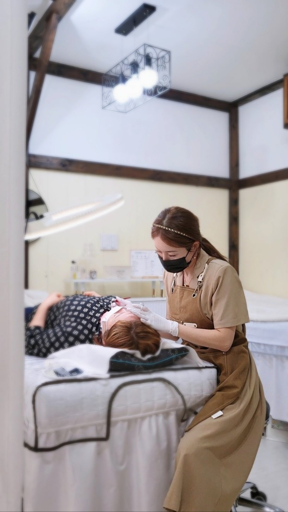
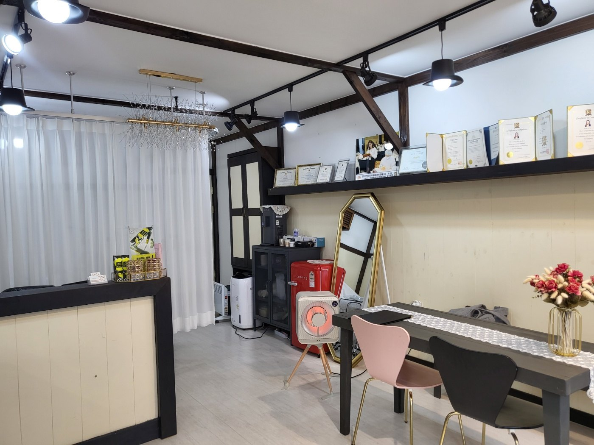
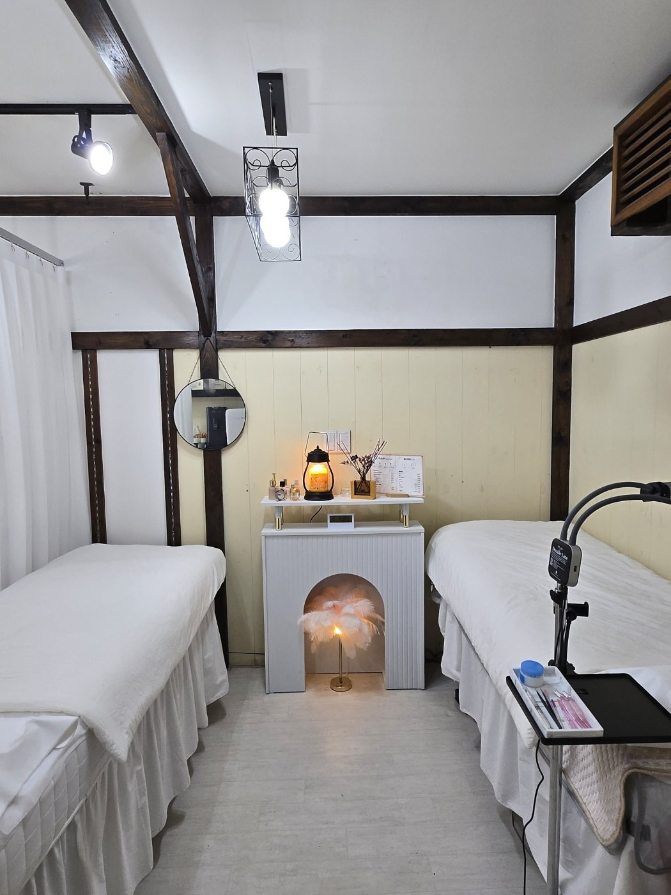
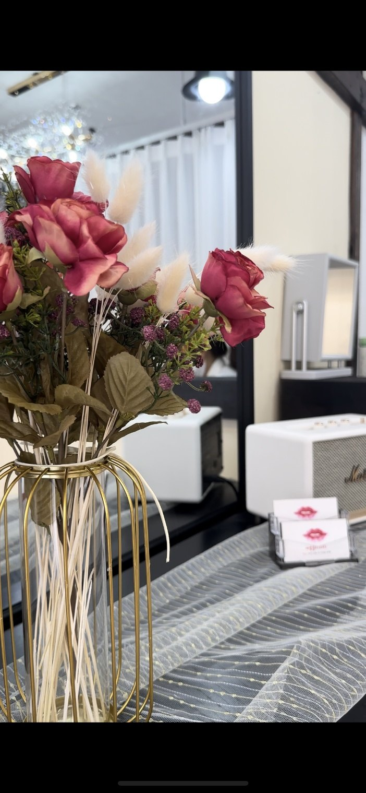

그릴 때마다 달라지는 모양
양쪽 높이를 맞추려다 진해지고,
어디까지 그려야 할지 헷갈렸다면.
WOMEN’S REAL WORK / 예쁨을더하다
비슷한 사례를 찾으셨다면, 현재 눈썹 사진으로 상담해 보세요.
BEFORE YOUR FIRST BROW
양쪽 높이를 맞추려다 진해지고,
어디까지 그려야 할지 헷갈렸다면.
빈 곳은 신경 쓰이지만
눈썹만 도드라져 보일까 걱정된다면.
다시 진행해도 괜찮을지,
어떤 디자인이 가능할지 궁금하다면.
그 고민을 듣는 것부터 시작합니다.

PERSONAL BROW DESIGN
골격과 눈매, 근육의 움직임과 비대칭을 살펴 디자인 방향을 찾습니다.
눈썹의 분포와 방향, 기존 잔흔과 피부 상태를 먼저 확인합니다.
평소 메이크업과 원하는 분위기. 자연스러운 결부터 또렷한 표현까지 상의합니다.
| 경력 | 반영구 시술 8년 |
|---|---|
| 눈썹 | 자연눈썹 · 화장눈썹 |
| 속눈썹 | 속눈썹펌 · 속눈썹연장 |
YOUR BROW DESIGNER
오래 찾아주신 고객과 소개로 이어진 만남들. 8년간 쌓아온 경험으로 현재 눈썹을 살피고, 원하는 진하기와 분위기를 함께 상의합니다.
네이버에서 확인하기PROCESS
어떤 기법인지 미리 정하지 않으셔도 됩니다.
현재 눈썹과 원하는 느낌부터 함께 살펴봅니다.
실제 작업 장면입니다 · 소리 없이 재생됩니다
카카오로 희망 일정과 고민을 알려주세요. 네이버에서는 매장 정보를 확인할 수 있습니다.
현재 눈썹 사진과 기존 반영구 경험, 원하는 진하기와 분위기를 알려주세요.
방문 시 얼굴형과 눈매, 근육의 움직임과 비대칭, 눈썹 분포와 잔흔을 확인합니다.
현재 눈썹과 평소 메이크업을 살피고, 원하는 모양과 진하기를 함께 상의합니다.
상담한 방향에 맞춰 작업합니다. 피부 상태와 특이사항을 미리 확인합니다.
탈각 상태와 착색을 확인하고 진하기를 상의해 보완합니다. 횟수와 기한은 상담 시 안내합니다.
MEN’S BROW
사진에 겹쳐 있던 흰색 문구를 제거한 이미지입니다. 피부 상태와 촬영 시점에 따라 표현과 결과에는 개인차가 있습니다.
MEN’S REAL WORK
PRICE & BOOKING
원하는 모양을 정확히 설명하지 못해도 괜찮습니다.
현재 눈썹 사진과 고민부터 보내주세요.
자연눈썹(엠보기법) 12만원
맞춤 디자인 상담 · 리터치
다른 기법·잔흔에 따른 금액, 리터치 횟수·기한 등 세부 조건
BEFORE YOU DECIDE
처음이라도, 잔흔이 남아 있어도.
걱정되는 점부터 편하게 말씀해주세요.
고객별 위생관리와 작업 공간의 청결을 기본으로, 시술 전 피부 상태와 특이사항을 확인합니다.
1차 작업은 부담스럽지 않은 자연스러운 표현을 중심으로 진행합니다. 리터치 시 탈각 상태를 확인하고 원하는 진하기를 상의합니다.
근육의 움직임과 비대칭, 눈썹 분포를 확인하고 평소 메이크업과 원하는 분위기를 함께 살펴 디자인 방향을 찾습니다.
잔흔의 색과 진하기에 따라 달라집니다. 특히 진한 푸른 잔흔은 진행이 어려울 수 있어 현재 눈썹 사진으로 먼저 상담해 주세요.
통증에는 개인차가 있으며 불편함을 느끼실 수 있습니다. 걱정되는 부분과 피부 특이사항은 상담 시 말씀해 주세요.
자연눈썹(엠보) 기준 120,000원이며 리터치 포함입니다. 다른 기법과 잔흔 상태에 따른 금액, 리터치 횟수·기한 등 세부 조건은 상담에서 확인해 주세요.
속눈썹펌과 속눈썹연장도 함께 운영합니다. 원하는 디자인과 가능한 일정은 문의해 주세요.
SPACE
고객별 위생관리와 작업 공간의 청결을 기본으로,
시술 전 피부 상태와 특이사항을 확인합니다.



오시는 길
경남 거제시 옥포로20길 9
YOUR NEXT STEP
원하는 모양을 정확히 설명하지 못해도 괜찮습니다.
현재 눈썹과 고민부터 편하게 보내주세요.